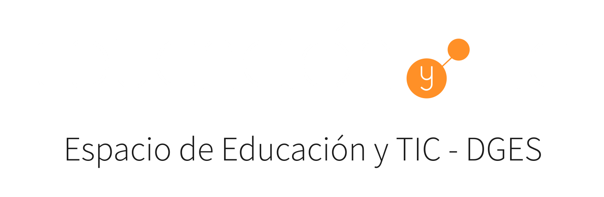
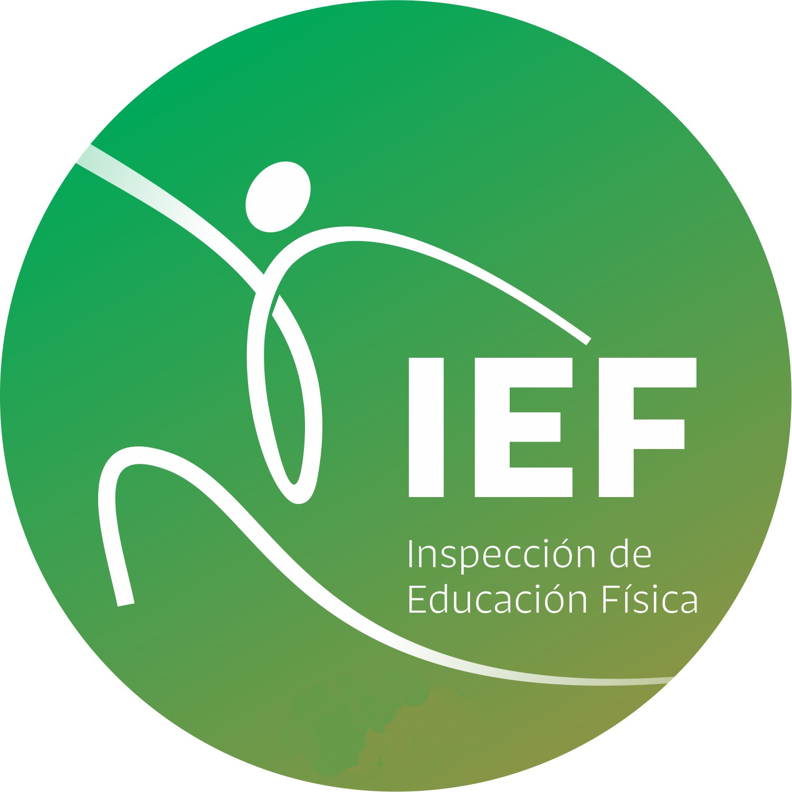

Deporte individual
Atletismo
Historia, características generales, pruebas de pista y campo, y un desafío para poner en juego lo aprendido.
Abrir recurso

Recursos educativos abiertos
Una colección de materiales interactivos sobre deportes, preparación física y cuerpo humano, pensados para estudiantes y docentes.
Colección
Mostrando 18 recursos
Historia, características generales, pruebas de pista y campo, y un desafío para poner en juego lo aprendido.
Abrir recursoConceptos generales, reglas básicas, fundamentos técnicos y aspectos tácticos para ciclo básico.
Abrir recursoFuerza, velocidad, resistencia y flexibilidad, con una evaluación interactiva de los contenidos.
Abrir recursoOrientación, equilibrio, reacción, ritmo, adaptación, diferenciación y acoplamiento o sincronización.
Abrir recursoBeneficios, factores que influyen, duración, modalidades, sugerencias metodológicas y ejemplos.
Abrir recursoHistoria, objetivo del juego, reglamento, fundamentos técnicos, aspectos tácticos y evaluación.
Abrir recursoHistoria, características del juego, aspectos reglamentarios y técnicos, y desafío interactivo.
Abrir recursoHistoria, tipos de Juegos, anillos, antorcha, reconocimientos y un test olímpico interactivo.
Abrir recursoHistoria, definición, características principales, reglamento y actividad de múltiple opción.
Abrir recursoHistoria, beneficios para la salud y aspectos técnicos de crol, pecho, espalda y mariposa.
Abrir recursoHistoria, balón ovalado, objetivo, reglas básicas, desarrollo del juego y desafío interactivo.
Abrir recursoHistoria del maratón, beneficios, tipos de pisada, lesiones frecuentes y técnica de carrera.
Abrir recursoFunciones, clasificación, metabolismo, cuidado, nutrición, músculos clave y lesiones frecuentes.
Abrir recursoFunciones, huesos y articulaciones, impacto del ejercicio y medidas preventivas para su cuidado.
Abrir recursoHistoria, características, reglas básicas, aspectos técnicos y desafío interactivo.
Abrir recursoHistoria, características principales, aspectos reglamentarios y observación del juego.
Abrir recursoHistoria, características principales, reglamento, aspectos técnicos y observación del juego.
Abrir recursoHistoria, objetivo, reglas, fundamentos técnicos, aspectos tácticos y desafío interactivo.
Abrir recurso